026 — IAM, roles, políticas, STS y federación
Parte: 02 — AWS: plataforma esencial
Nivel: intermedio · Horas estimadas: 4
Laboratorio: iam · Estado: EXECUTABLE_CORE
🎯 Propósito
Dominar el modelo de identidad de AWS hasta poder predecir el resultado de una petición sin ejecutarla, y sustituir toda credencial de larga vida por identidad temporal. Es la clase que hace posible que en la parte 17 un pipeline despliegue sin secretos, y la que explica por qué la mayoría de brechas en AWS no son fallos de AWS.
📚 Resultados de aprendizaje
Al finalizar podrás:
- Reproducir el orden de evaluación de una petición y predecir el resultado ante políticas en conflicto.
- Escribir una política con condiciones que acoten origen, etiqueta y presencia de MFA.
- Configurar federación OIDC desde un pipeline con una condición de sujeto que impida la suplantación.
- Usar límites de permisos para delegar creación de roles sin permitir escalada de privilegios.
- Diagnosticar un acceso denegado leyendo el mensaje para saber qué documento revisar.
🧩 Conceptos centrales
| Concepto | Comprensión verificable |
|---|---|
rol |
Identidad sin credenciales permanentes que se asume temporalmente. Tiene dos documentos: la política de confianza —quién puede asumirlo— y las de permisos —qué puede hacer una vez dentro—. |
política de confianza |
Documento que declara qué principales pueden asumir el rol y bajo qué condiciones. Es la puerta de entrada, y un error aquí es más grave que uno en los permisos. |
límite de permisos |
Política adjunta a una identidad que define el techo de lo que puede hacer, aunque otras políticas concedan más. Permite delegar la creación de roles sin permitir escalada. |
confused deputy |
Ataque en el que un tercero legítimo es inducido a actuar contra un recurso ajeno. Se mitiga con condiciones sobre la cuenta de origen y el identificador externo. |
clave de condición |
Atributo evaluable de la petición: origen, hora, MFA, etiquetas, VPC. Convierte una política de «puede» en «puede, si además se cumple esto». |
🧠 Modelo mental
Una cuenta AWS es una frontera de seguridad y facturación; los servicios se combinan mediante contratos, no como una lista de productos aislados.
Aplicado a esta clase, separa siempre cuatro planos: intención (qué necesita el usuario), configuración (qué declaramos), estado observado (qué existe de verdad) y evidencia (cómo sabemos que cumple). Confundirlos produce diseños que se ven correctos en un diagrama pero fallan al operar.
🗺️ Flujo de razonamiento

📖 Desarrollo
1. El orden de evaluación, y cómo leer el error
AWS evalúa cada petición en una secuencia fija. Conocerla convierte «no tengo permiso» en un diagnóstico de un minuto:
- Deny explícito en cualquier política → denegada, sin excepción.
- SCP de la organización → si no lo permite, denegada.
- Límite de permisos, si existe → si no lo permite, denegada.
- Política de identidad o de recurso → alguna debe conceder.
- Condiciones → deben cumplirse todas.
El mensaje de error dice exactamente dónde mirar, y casi nadie lo lee:
"...with an explicit deny in a service control policy"
→ revisa las SCP. Añadir permisos a la identidad no hará nada.
"...with an explicit deny in a permissions boundary"
→ revisa el límite de permisos del rol.
"...with an explicit deny in an identity-based policy"
→ hay un Deny en la política del rol o del usuario.
"...because no identity-based policy allows the action"
→ denegación implícita: falta conceder. Este es el único caso en que
añadir un permiso resuelve el problema.
Solo el cuarto caso se arregla concediendo. Los tres primeros exigen tocar otro documento, y perseguirlos con más permisos es la causa habitual de que un rol acabe con AdministratorAccess.
Hay un matiz sobre acceso entre cuentas: cuando el recurso está en otra cuenta hacen falta las dos políticas —la de identidad en la cuenta que llama y la de recurso en la que responde—. Una sola nunca basta, y el mensaje no siempre distingue cuál falta.
2. Condiciones: donde una política deja de ser un cheque en blanco
Un permiso sin condiciones es válido desde cualquier lugar, a cualquier hora y en cualquier contexto. Las claves de condición acotan eso:
{
"Effect": "Allow",
"Action": ["s3:GetObject", "s3:PutObject"],
"Resource": "arn:aws:s3:::cloudshop-facturas/*",
"Condition": {
"Bool": {"aws:MultiFactorAuthPresent": "true"},
"StringEquals": {"aws:PrincipalTag/equipo": "finanzas"},
"IpAddress": {"aws:SourceIp": ["203.0.113.0/24"]},
"DateLessThan": {"aws:CurrentTime": "2026-12-31T23:59:59Z"}
}
}
Las cuatro condiciones se combinan con Y lógico: todas deben cumplirse. Dentro de una misma clave con varios valores, la relación es O.
Dos condiciones merecen atención especial:
aws:PrincipalTag habilita control de acceso por atributos: en vez de una política por equipo, una sola política que compara la etiqueta del principal con la del recurso. Escala mucho mejor que enumerar.
aws:SourceIp no funciona como se espera con endpoints de VPC. Cuando la llamada viaja por un endpoint, la IP de origen es privada y la condición falla. Para ese caso hay que usar aws:SourceVpce o aws:SourceVpc, y es un fallo que se descubre justo después de endurecer la red.
Y una condición que evita el confused deputy al conceder acceso a un tercero:
"Condition": {"StringEquals": {"sts:ExternalId": "identificador-unico-por-cliente"}}
Sin ella, un proveedor que gestiona varias cuentas podría ser inducido a actuar contra la tuya usando su propio rol legítimo.
3. Federación OIDC: desplegar sin ningún secreto
El mecanismo que elimina las claves de acceso de los pipelines, aplicado a AWS. El intercambio, sin secreto compartido en ningún punto:
1. El pipeline pide a su plataforma un token OIDC que declara quién es.
2. Llama a sts:AssumeRoleWithWebIdentity presentando ese token.
3. AWS verifica la firma contra las claves públicas del emisor y comprueba
que las declaraciones cumplen la política de confianza.
4. Devuelve credenciales temporales de 1 hora.
La política de confianza es donde se juega todo:
{
"Effect": "Allow",
"Principal": {"Federated": "arn:aws:iam::123456789012:oidc-provider/token.actions.githubusercontent.com"},
"Action": "sts:AssumeRoleWithWebIdentity",
"Condition": {
"StringEquals": {
"token.actions.githubusercontent.com:aud": "sts.amazonaws.com",
"token.actions.githubusercontent.com:sub": "repo:miorg/cloudshop:environment:produccion"
}
}
}
Sin la condición sobre sub, cualquier repositorio de GitHub del mundo puede asumir el rol. La firma será válida porque procede del mismo emisor; lo único que distingue a tu repositorio de otro es esa declaración.
Los errores por grado de peligro:
sin condición sobre sub → cualquiera, en cualquier parte
"sub": "repo:miorg/*" → cualquier repositorio de tu organización
StringLike "repo:miorg/cloudshop:*" → cualquier rama, incluida una de un fork
StringEquals "...:environment:produccion" → correcto
Usar environment en lugar de ref añade una capa: los entornos de GitHub admiten revisores obligatorios, así que el rol solo es asumible tras una aprobación humana.
4. Límites de permisos: delegar sin permitir escalada
El problema: quieres que los equipos creen sus propios roles sin abrir la puerta a que se concedan AdministratorAccess. Conceder iam:CreateRole y iam:AttachRolePolicy es, de hecho, conceder administrador.
Un límite de permisos define el techo de lo que una identidad puede hacer, con independencia de lo que sus políticas concedan:
// Límite: nada fuera de estos servicios, y prohibido tocar IAM salvo lo mínimo
{
"Version": "2012-10-17",
"Statement": [
{"Effect": "Allow", "Action": ["s3:*", "dynamodb:*", "logs:*", "sqs:*"], "Resource": "*"},
{"Effect": "Deny", "Action": ["iam:*", "organizations:*", "account:*"], "Resource": "*"}
]
}
Y la política que permite delegar obligando a aplicar ese límite:
{
"Effect": "Allow",
"Action": ["iam:CreateRole", "iam:AttachRolePolicy"],
"Resource": "arn:aws:iam::*:role/equipos/*",
"Condition": {
"StringEquals": {"iam:PermissionsBoundary": "arn:aws:iam::123456789012:policy/limite-equipos"}
}
}
La condición es la clave: solo se pueden crear roles que lleven el límite adjunto. Sin ella, el equipo crearía roles sin límite y la delegación sería una escalada.
Falta una pieza para cerrarlo del todo:
{"Effect": "Deny", "Action": ["iam:DeleteRolePermissionsBoundary", "iam:PutRolePermissionsBoundary"], "Resource": "*"}
Sin esta denegación, el equipo podría crear el rol con límite y quitárselo después. Es el hueco que convierte un diseño correcto en uno inútil, y no es evidente hasta que alguien lo prueba.
5. Privilegio mínimo con las herramientas de AWS
Adivinar la lista de permisos produce o bien exceso o bien bloqueo. AWS ofrece tres herramientas para partir de lo observado:
# 1. Qué servicios ha usado realmente un rol
$ aws iam generate-service-last-accessed-details --arn arn:aws:iam::...:role/ci-deploy
$ aws iam get-service-last-accessed-details --job-id ... \
--query 'ServicesLastAccessed[?TotalAuthenticatedEntities>`0`].[ServiceName,LastAuthenticated]'
# 2. Generar una política a partir de la actividad de CloudTrail
$ aws accessanalyzer start-policy-generation --policy-generation-details \
'{"principalArn":"arn:aws:iam::...:role/ci-deploy"}' --cloud-trail-details ...
# 3. Validar la política antes de aplicarla
$ aws accessanalyzer validate-policy --policy-document file://politica.json \
--policy-type IDENTITY_POLICY --query 'findings[?findingType==`SECURITY_WARNING`]'
La tercera detecta patrones peligrosos que pasan desapercibidos: comodines en el principal, iam:PassRole sin restricción de recurso, o acciones que permiten escalada.
iam:PassRole merece atención propia. Permite entregar un rol a un servicio, y sin restricción de recurso equivale a conceder cualquier permiso que exista en la cuenta: basta con pasar un rol de administrador a una función o a una instancia que tú controlas.
// Peligroso
{"Effect": "Allow", "Action": "iam:PassRole", "Resource": "*"}
// Correcto: solo roles concretos y solo al servicio esperado
{
"Effect": "Allow", "Action": "iam:PassRole",
"Resource": "arn:aws:iam::*:role/cloudshop-tarea-*",
"Condition": {"StringEquals": {"iam:PassedToService": "ecs-tasks.amazonaws.com"}}
}
Y el límite del método basado en registros, ya señalado en la clase 018: los caminos de error usan permisos distintos. Un rol que escribe en una cola pero no en su cola de mensajes fallidos funciona hasta el primer fallo.
🔬 Ejemplo trabajado
El pipeline de CloudShop despliega en producción con una clave de acceso de 2 años y medio y PowerUserAccess. Se migra a OIDC con privilegio mínimo, verificando cada paso.
Estado inicial:
$ aws iam list-access-keys --user-name ci-deploy \
--query 'AccessKeyMetadata[0].[CreateDate,Status]' --output text
2023-03-14T10:22:00Z Active
$ aws iam list-attached-user-policies --user-name ci-deploy --query 'AttachedPolicies[].PolicyName'
["PowerUserAccess"]
antigüedad 2 años 5 meses, 0 rotaciones
copias conocidas secreto del repositorio, 2 portátiles, 1 runbook
permisos ~8.000 acciones
ventana si se filtra ilimitada
Paso 1 — proveedor OIDC y prueba de la política de confianza insegura, para verla fallar:
$ aws iam create-open-id-connect-provider \
--url https://token.actions.githubusercontent.com --client-id-list sts.amazonaws.com
Con la condición solo sobre aud, desde un repositorio de laboratorio ajeno a la organización:
$ aws sts assume-role-with-web-identity --role-arn ...:role/ci-deploy-oidc ...
{"Credentials": {...}} ← ÉXITO desde un repositorio ajeno
Se corrige acotando el sujeto al entorno:
$ aws iam update-assume-role-policy --role-name ci-deploy-oidc \
--policy-document file://confianza.json # sub: repo:miorg/cloudshop:environment:produccion
Pruebas negativas y positiva:
desde otro repositorio → AccessDenied ✓
desde miorg/cloudshop, rama de trabajo → AccessDenied ✓
desde miorg/cloudshop, entorno prod → credenciales de 1 h ✓
Paso 2 — recortar permisos con lo observado en 30 días:
$ aws accessanalyzer start-policy-generation --policy-generation-details \
'{"principalArn":"arn:aws:iam::123456789012:user/ci-deploy"}'
$ aws accessanalyzer get-generated-policy --job-id ... \
--query 'generatedPolicyResult.generatedPolicies[0].policy' | jq -r '.Statement[].Action' | wc -l
34
permisos concedidos antes ~8.000 acciones
acciones realmente usadas 34
servicios usados 5 (s3, cloudfront, ecs, ecr, logs)
Se ejercitan también los caminos de error antes de aplicar. Aparecen dos acciones más que ningún despliegue correcto usaba:
ecs:StopTask al abortar un despliegue fallido
logs:PutLogEvents sobre el grupo de errores
Paso 3 — validar la política antes de aplicarla:
$ aws accessanalyzer validate-policy --policy-document file://ci-deploy.json \
--policy-type IDENTITY_POLICY \
--query 'findings[?findingType==`SECURITY_WARNING`].[issueCode,learnMoreLink]' --output text
PASS_ROLE_WITH_STAR_IN_RESOURCE https://docs.aws.amazon.com/...
El validador detecta el fallo que la generación automática no evita: iam:PassRole con Resource: "*", que permite pasar cualquier rol —incluido uno de administrador— a un servicio controlado por el pipeline. Se acota:
{
"Effect": "Allow", "Action": "iam:PassRole",
"Resource": "arn:aws:iam::*:role/cloudshop-tarea-*",
"Condition": {"StringEquals": {"iam:PassedToService": "ecs-tasks.amazonaws.com"}}
}
$ aws accessanalyzer validate-policy ... --query 'findings[?findingType==`SECURITY_WARNING`]'
[] ✓
Paso 4 — retirar la credencial, con observación previa:
$ aws iam update-access-key --user-name ci-deploy --access-key-id AKIA... --status Inactive
# 7 días sin fallos ni llamadas registradas con esa clave
$ aws iam delete-access-key --user-name ci-deploy --access-key-id AKIA...
$ aws iam delete-user --user-name ci-deploy
Resultado:
```text antes después credencial permanente, 2,5 años token de 1 h secretos almacenados 4 copias 0 acciones permitidas ~8.000 36 iam:PassRole sin restricción 1 patrón, 1 servicio superficie si se filtra ilimitada 1 h, solo ese repo y entorno
**El paso que más aportó fue el validador**, no la generación automática: la política generada a partir del uso real contenía un `PassRole` sin acotar que habría permitido escalar a administrador desde el propio pipeline.
## 🧪 Laboratorio guiado
Ejecuta desde la raíz:
```bash
python classes/part-02-aws-core-platform/026-iam-roles-politicas-sts-y-federacion/lab.py
El laboratorio selecciona el motor de práctica iam y produce
lab_result.json. El escenario, sus comprobaciones y el artefacto esperado corresponden a
esta clase; no requiere credenciales y deja explícito qué debe revalidarse en un sandbox real.
- Lee
exercise.stepsy formula una predicción antes de ejecutar. - Ejecuta la práctica y verifica todos los elementos de
checks. - Provoca el caso de
negative_testy explica la señal observada. - Materializa
politica-iam-awsenevidence/usando la plantilla indicada. - Para proveedor real, sigue
sandbox.requires, registra costo y ejecutadestroy.
Evidencia esperada
El artefacto principal es una matriz de acceso mínimo con prueba de denegación. Además, la entrega debe incluir el comando ejecutado, la salida estructurada y una conclusión que no exceda lo observado.
🏆 Reto verificable
Construye politica-iam-aws para el caso CloudShop. Incluye una alternativa descartada,
un supuesto que pueda falsarse, una prueba de fallo y una decisión de rollback.
✅ Criterio de aceptación
- [ ]
lab.pytermina con código 0 y genera JSON válido. - [ ] La entrega conecta al menos tres requisitos con mecanismos verificables.
- [ ] Existe una prueba positiva y una prueba negativa con evidencia.
- [ ] Seguridad, costo y operación aparecen como decisiones, no como anexos.
- [ ] Se declara una limitación y una condición que obligaría a revisar el diseño.
- [ ] Otra persona puede repetir el recorrido sin conocimiento tácito.
⚠️ Errores frecuentes
| Síntoma | Causa probable | Corrección |
|---|---|---|
| Cualquier repositorio de GitHub puede asumir el rol de despliegue | La política de confianza no condiciona la declaración sub |
Condiciona con StringEquals sobre repositorio y entorno; repo:org/* o StringLike con comodín no bastan. |
| Se conceden más permisos y el acceso sigue denegado | El deny está en una SCP o en un límite de permisos | Lee el mensaje de error: nombra el documento exacto que deniega. |
Una política endurecida con aws:SourceIp rompe el acceso desde la VPC |
A través de un endpoint de VPC la IP de origen es privada | Usa aws:SourceVpce o aws:SourceVpc para tráfico que viaja por endpoints. |
| Un equipo con permiso para crear roles se concede administrador | Se delegó iam:CreateRole sin exigir límite de permisos ni impedir retirarlo |
Condiciona con iam:PermissionsBoundary y deniega Put/DeleteRolePermissionsBoundary. |
| Un pipeline con permisos mínimos consigue privilegios de administrador | iam:PassRole con Resource * permite pasar cualquier rol a un servicio propio |
Acota PassRole por patrón de recurso y por iam:PassedToService. |
🛡️ Seguridad, ética y costo
Trabaja con cuentas propias o sandboxes autorizados. No publiques secretos, identificadores reales ni datos personales. Antes de crear recursos pagos define presupuesto, etiquetas y comando de destrucción; después verifica que no queden recursos huérfanos. Los ejemplos locales enseñan contratos, pero no certifican cumplimiento ni disponibilidad de producción.
❓ Preguntas de comprobación
- Un error dice «explicit deny in a service control policy». ¿Sirve de algo añadir permisos al rol? ¿Qué documento revisas?
- ¿Por qué
aws:SourceIpdeja de funcionar cuando el tráfico pasa por un endpoint de VPC, y qué clave se usa entonces? - ¿Qué dos piezas hacen falta para delegar la creación de roles sin permitir escalada de privilegios?
- ¿Por qué
iam:PassRoleconResource: "*"equivale a conceder administrador? - ¿Qué distingue exactamente tu repositorio del de un atacante en un intercambio OIDC?
🔗 Referencias
- AWS (2024). Policy evaluation logic — orden de evaluación completo con SCP y límites de permisos. https://docs.aws.amazon.com/IAM/latest/UserGuide/reference_policies_evaluation-logic.html
- AWS (2024). Global condition context keys — catálogo de claves de condición y su comportamiento. https://docs.aws.amazon.com/IAM/latest/UserGuide/reference_policies_condition-keys.html
- AWS (2024). Permissions boundaries for IAM entities — delegación segura de creación de roles. https://docs.aws.amazon.com/IAM/latest/UserGuide/access_policies_boundaries.html
- AWS (2024). IAM Access Analyzer policy validation — comprobaciones de seguridad antes de aplicar una política. https://docs.aws.amazon.com/IAM/latest/UserGuide/access-analyzer-policy-validation.html
- Hardt, D., ed. (2012). RFC 6749: The OAuth 2.0 Authorization Framework — base del intercambio de token por credenciales. https://www.rfc-editor.org/rfc/rfc6749
- Documentación oficial vigente del servicio implementado; registra URL y fecha de consulta.
📥 Descargar: Parte 02 en PDF · Recorrido de AWS en PDF · Manual integral